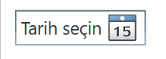
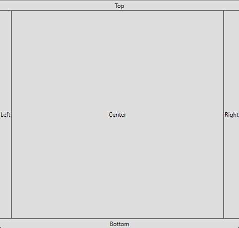

Bileşenler
Kontroller
Button
Button, kullanıcının etkileşime girebilceği bir yapıdır.
<Button Content="Kaydet" Width="100" Height="40" Click="Button_Click"/>
Content, bileşenin eğer yazısı varsa içeriğini ayarlar.
Foreground, bileşenin yazı özelliği var ise yazısına renk verir.
Background, bileşenin arka plandaki rengini ayarlar.
FontSize, bileşenin yazı boyutunu ayarlar
Margin, bileşenin etrafına bir duvar gibi boşluk bırakır. "x,y,z,t" şeklindedir.
Padding, bileşenin etrafına duvar yerine kendisinden bir duvar örer. "x,y,z,t" formatındadır.
IsEnabled, bileşenin kullanabirliğini ayarlar.
Visibility, bileşenin görünürlüğünü ayarlar. "Hidden"; saklar, "Visible"; görünürlüğü açar.
CheckBox
CheckBox, kullanıcının onay kutusu olarak kullanabilceği bir bileşendir.
private void Button_Click(object sender, RoutedEventArgs e)
{
if(checkBox.IsChecked == true)
{
MessageBox.Show("CheckBox seçilmiş");
}
else
{
MessageBox.Show("CheckBox seçilmemiş");
}
}
IsChecked ile CheckBox'sın seçilip seçilmediğine bakabiliriz.
ComboBox
ComboBox, birden fazla yazıyı seçebilceğimiz bir yapıdır.
<ComboBox Width="200" Height="30">
<ComboBoxItem Content="Kırmızı" />
<ComboBoxItem Content="Yeşil" />
<ComboBoxItem Content="Mavi" />
</ComboBox>
Bu kod, ComboBox oluşturur ve içine üç adet item koyar. X.Text ile mevcut yazıya erişebilinir.
IsEditabled ile de özel Item'ler konulabilir.
DataPicker
DataPicker, tarih seçimini sağlar.

Label
Label, sadece yazıyı göstermek içi kullanılan bir bileşelerdir.
ListBox
ListBox, liste şekilinde verileri görüntülemeyi sağlar. ListBoxItem ile de veriler eklenir.
<ListBox Width="200" Height="120">
<ListBoxItem Content="Kırmızı" />
<ListBoxItem Content="Yeşil" />
<ListBoxItem Content="Mavi" />
</ListBox>
PasswordBox
PasswordBox, şifreli bir metin yazma kutucuğudur.
<PasswordBox Canvas.Left="235" Canvas.Top="143" Width="120"/>
ProgressBar
ProgressBar, bir işlemin görsel olarak hangi durumda olduğunu belirtir.
<ProgressBar Height="53" Canvas.Left="79" Canvas.Top="40" Width="289" Value="10"/>
RadioButton
RadioButton, yuvarlak bir onay kutusu oluşturur. CheckBox ile neredeyse aynıdır.
<RadioButton Content="RadioButton" Canvas.Left="208" Canvas.Top="95"/>
Slider
Slider, kaydırıcı olarak görev görür.
<Slider Canvas.Left="147" Canvas.Top="54" Width="120" Value="5"/>
TabControl
TabControl, sekme sekme bir yapılıdır.
<TabControl Height="484" Width="500">
<TabItem Header="TabItem">
<Grid Background="#FFE5E5E5"/>
</TabItem>
<TabItem Header="TabItem">
<Grid Background="#FFE5E5E5"/>
</TabItem>
</TabControl>
TextBox
TextBox, kullanıcının yazı yazabilceği bir kutu sağlar.
<TextBox Canvas.Left="90" TextWrapping="Wrap" Text="TextBox" Canvas.Top="210" Width="120"/>
TextWrapping, TextBox'sın yazıları kutucuğu aştığı zaman bir satır kaydırır.
Koyteynırlar
Grid
Grid, satır ve sütün şeklinde düzenlenmesinde kullanılır.
<Grid>
<!--Grid'in içindeki bileşenler-->
</Grid>
RowDefinitions ve ColumnDefinitions ilede satırlara ve sütünlara bölebiliriz. Bu satırlara ve sütünlara Width ve Height verilerek, satırların ve sütünların boyutlandırılması yapılır.
Eğer bir bileşen, Row veya Column'lardan oluşan bölüme konulacaksa Grid.Row ve Grid.Column özniteliklerini belirlenmelidir. Aksi takdirde sıfıra sıfır konumunda bulunan bölüme gider. Ayrıca bölümler yukarıdan ve soldan sağ doğru Index numarlarıyla temsil edilir.
<Grid>
<Grid.RowDefinitions>
<RowDefinition/>
<RowDefinition/>
</Grid.RowDefinitions>
<Grid.ColumnDefinitions>
<ColumnDefinition/>
<ColumnDefinition/>
</Grid.ColumnDefinitions>
<Border Background="Red"/>
<Border Background="Red" Grid.Column="1" Grid.Row="1"/>
</Grid>
Bu kod, pencereyi 4 adet eş parçaya böler. Sıfırıncı satır ve sıfırıncı sütündaki, birinci satır ve birinci sütündaki bölmeyi kırmızı yapar.
StackPanel
StackPanel, sıra sıra bileşenleri düzenliyen bir koyteynırdır
<StackPanel>
<!--Bileşenler-->
</StackPanel>
Özniteliklerinden biri olan Orientation, bileşen sıralama yönünü belirler. "Horizontal"; Yukarıdan aşşağı, "Vertical"; Soldan sağ.
<StackPanel Background="#DDD" Width="150">
<TextBlock Text="Menü" FontWeight="Bold" Margin="0,0,0,10"/>
<Button Content="Ana Sayfa" Margin="0,5,0,0"/>
<Button Content="Ayarlar" Margin="0,5,0,0"/>
<Button Content="Çıkış" Margin="0,5,0,0"/>
</StackPanel>
Bu kod basit bir buton yapısını gösterir.
DockPanel
DockPanel; koyteynırı üst, sağ, sol, merkez ve alt olmak üzere 5 parçaya böler. Her bileşen yerleşeceği kısımın ismini yazarak yerleşir. Örn: DockPanel.Dock="Top"

Canvas
Canvas, herhangi bir düzenleme olmadan sadece ama sadece alan sağlayan bir koyteynırdır.
Konumlandırması ise Canvas.Left, Canvas.Right, Canvas.Top ve Canvas.Bottom ile konumlandırma yapılır.
WrapPanel
WrapPanel, bileşenleri sırayla sıralar eğer satırın sonuna gelinirse bir alt satıra iner.
<WrapPanel>
<Button Content="1" Width="60" Height="30"/>
<Button Content="2" Width="60" Height="30"/>
<Button Content="3" Width="60" Height="30"/>
<Button Content="4" Width="60" Height="30"/>
<Button Content="5" Width="60" Height="30"/>
</WrapPanel>
Kaynakça